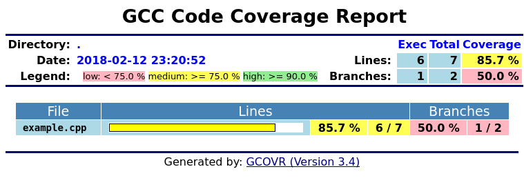
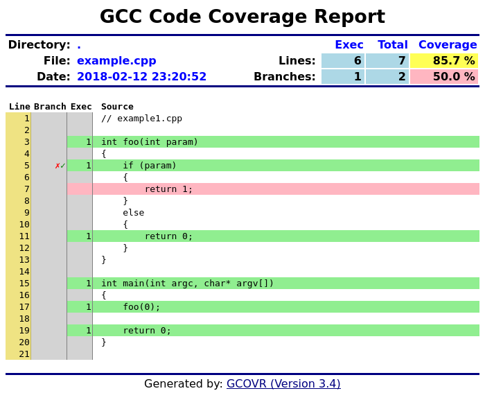

Abstract
Gcovr provides a utility for managing the use of the GNU gcov utility and generating summarized code coverage results. This command is inspired by the Python coverage.py package, which provides a similar utility for Python.
The gcovr command can produce different kinds of coverage reports:
default: compact human-readable summaries
--xml: machine readable XML reports in Cobertura format
--html: HTML summaries
--html-details: HTML report with annotated source files
Thus, gcovr can be viewed as a command-line alternative to the lcov utility, which runs gcov and generates an HTML-formatted report. The development of gcovr was motivated by the need for text summaries and XML reports.
This documentation describes Gcovr 3.4.
Contents
Gcovr is a Python package that includes a self-contained gcovr command. Gcovr is an extension of gcov, a GNU utility that summarizes the lines of code that are executed - or "covered" - while running an executable. The gcovr command interprets gcov data files to summarize code coverage in several formats:
Text output with coverage statistics indicated with summary statistics and lists of uncovered line, and
XML output that is compatible with the Cobertura code coverage utility.
HTML output with coverage rates indicated using colored bar graphs.
The Gcovr Home Page is http://gcovr.com. Automated test results are available through Travis CI and Appveyor. Gcovr is available under the BSD license.
The Gcovr User Guide provides the following documentation:
Getting Started: Some simple examples that illustrate how to use Gcovr
The gcovr Command: Description of command-line options for gcovr
Installation: How to install Gcovr
Status and Future Plans: Comments on the past, present and future of Gcovr
The gcovr command provides a summary of the lines that have been executed in a program. Code coverage statistics help you discover untested parts of a program, which is particularly important when assessing code quality. Well-tested code is a characteristic of high quality code, and software developers often assess code coverage statistics when deciding if software is ready for a release.
The gcovr command can be used to analyze programs compiled with GCC. The following sections illustrate the application of gcovr to test coverage of the following program:
1 // example1.cpp
2
3 int foo(int param)
4 {
5 if (param)
6 {
7 return 1;
8 }
9 else
10 {
11 return 0;
12 }
13 }
14
15 int main(int argc, char* argv[])
16 {
17 foo(0);
18
19 return 0;
20 }This code executes several subroutines in this program, but some lines in the program are not executed.
We compile example1.cpp with the GCC compiler as follows:
g++ -fprofile-arcs -ftest-coverage -fPIC -O0 example.cpp -o programNote that we compile this program without optimization, because optimization may combine lines of code and otherwise change the flow of execution in the program. Additionally, we compile with the -fprofile-arcs -ftest-coverage -fPIC compiler options, which add logic to generate output files that can be processed by the gcov command.
The compiler generates the program executable. When we execute this command:
./programthe files example1.gcno and example1.gcda are generated. These files are processed with by gcov to generate code coverage statistics. The gcovr command calls gcov and summarizes these code coverage statistics in various formats. For example:
gcovr -r .generates a text summary of the lines executed:
------------------------------------------------------------------------------
GCC Code Coverage Report
Directory: .
------------------------------------------------------------------------------
File Lines Exec Cover Missing
------------------------------------------------------------------------------
example.cpp 7 6 85% 7
------------------------------------------------------------------------------
TOTAL 7 6 85%
------------------------------------------------------------------------------
Each line of this output includes a summary for a given source file, including the number of lines instrumented, the number of lines executed, the percentage of lines executed, and a summary of the line numbers that were not executed. To improve clarity, gcovr uses an aggressive approach to grouping uncovered lines and will combine uncovered lines separated by "non-code" lines (blank, freestanding braces, and single-line comments) into a single region. As a result, the number of lines listed in the "Missing" list may be greater than the difference of the "Lines" and "Exec" columns.
The -r option specifies the root directory for the files that are being analyzed. This allows gcovr to generate a simpler report (without absolute path names), and it allows system header files to be excluded from the analysis.
Note that gcov accumulates statistics by line. Consequently, it works best with a programming style that places only one statement on each line.
The gcovr command can also summarize branch coverage using the --branches option:
gcovr -r . --branchesThis generates a tabular output that summarizes the number of branches, the number of branches taken and the branches that were not completely covered:
------------------------------------------------------------------------------
GCC Code Coverage Report
Directory: .
------------------------------------------------------------------------------
File Branches Taken Cover Missing
------------------------------------------------------------------------------
example.cpp 2 1 50% 5
------------------------------------------------------------------------------
TOTAL 2 1 50%
------------------------------------------------------------------------------
The default output format for gcovr is to generate a tabular summary in plain text. The gcovr command can also generate an XML output using the --xml and --xml-pretty options:
gcovr -r . --xml-prettyThis generates an XML summary of the lines executed:
<?xml version="1.0" ?>
<!DOCTYPE coverage
SYSTEM 'http://cobertura.sourceforge.net/xml/coverage-04.dtd'>
<coverage branch-rate="0.5" branches-covered="1" branches-valid="2"
complexity="0.0" line-rate="0.8571428571428571" lines-covered="6"
lines-valid="7" timestamp="1470497828" version="gcovr 3.3">
<sources>
<source>.</source>
</sources>
<packages>
<package branch-rate="0.5" complexity="0.0" line-rate="0.8571428571428571"
name="">
<classes>
<class branch-rate="0.5" complexity="0.0" filename="example.cpp"
line-rate="0.8571428571428571" name="example_cpp">
<methods/>
<lines>
<line branch="false" hits="1" number="3"/>
<line branch="true" condition-coverage="50% (1/2)" hits="1" number="5">
<conditions>
<condition coverage="50%" number="0" type="jump"/>
</conditions>
</line>
<line branch="false" hits="0" number="7"/>
<line branch="false" hits="1" number="11"/>
<line branch="false" hits="1" number="15"/>
<line branch="false" hits="1" number="17"/>
<line branch="false" hits="1" number="19"/>
</lines>
</class>
</classes>
</package>
</packages>
</coverage>This XML format is in the Cobertura XML format suitable for import and display within the Jenkins and Hudson continuous integration servers using the Cobertura Plugin.
The --xml option generates a denser XML output, and the --xml-pretty option generates an indented XML output that is easier to read. Note that the XML output contains more information than the tabular summary. The tabular summary shows the percentage of covered lines, while the XML output includes branch statistics and the number of times that each line was covered. Consequently, XML output can be used to support performance optimization in the same manner that gcov does.
The gcovr command can also generate a simple HTML output using the --html option:
gcovr -r . --html -o example-html.htmlThis generates a HTML summary of the lines executed. In this example, the file example1.html is generated, which has the following output:
The default behavior of the --html option is to generate HTML for a single webpage that summarizes the coverage for all files. The HTML is printed to standard output, but the -o (--output) option is used to specify a file that stores the HTML output.
The --html-details option is used to create a separate web page for each file. Each of these web pages includes the contents of file with annotations that summarize code coverage. Consider the following command:
gcovr -r . --html --html-details -o example-html-details.htmlThis generates the following HTML page for the file example1.cpp:
Note that the --html-details option can only be used with the -o (--output) option. For example, if the --output option specifies the output file coverage.html, then the web pages generated for each file will have names of the form coverage.<filename>.html.
The gcovr command recursively searches a directory tree to find gcov coverage files, and generates a text summary of the code coverage. The --help option generates the following summary of the gcovr command line options:
Usage: gcovr [options]
A utility to run gcov and generate a simple report that summarizes the
coverage
Options:
-h, --help show this help message and exit
--version Print the version number, then exit
-v, --verbose Print progress messages
--object-directory=OBJDIR
Specify the directory that contains the gcov data
files. gcovr must be able to identify the path
between the *.gcda files and the directory where gcc
was originally run. Normally, gcovr can guess
correctly. This option overrides gcovr's normal path
detection and can specify either the path from gcc to
the gcda file (i.e. what was passed to gcc's '-o'
option), or the path from the gcda file to gcc's
original working directory.
-o OUTPUT, --output=OUTPUT
Print output to this filename
-k, --keep Keep the temporary *.gcov files generated by gcov. By
default, these are deleted.
-d, --delete Delete the coverage files after they are processed.
These are generated by the users's program, and by
default gcovr does not remove these files.
-f FILTER, --filter=FILTER
Keep only the data files that match this regular
expression
-e EXCLUDE, --exclude=EXCLUDE
Exclude data files that match this regular expression
--gcov-filter=GCOV_FILTER
Keep only gcov data files that match this regular
expression
--gcov-exclude=GCOV_EXCLUDE
Exclude gcov data files that match this regular
expression
-r ROOT, --root=ROOT Defines the root directory for source files. This is
also used to filter the files, and to standardize the
output.
-x, --xml Generate XML instead of the normal tabular output.
--xml-pretty Generate pretty XML instead of the normal dense
format.
--html Generate HTML instead of the normal tabular output.
--html-details Generate HTML output for source file coverage.
--html-absolute-paths
Set the paths in the HTML report to be absolute
instead of relative
--html-encoding=HTML_ENCODING
HTML file encoding (default: UTF-8).
-b, --branches Tabulate the branch coverage instead of the line
coverage.
-u, --sort-uncovered Sort entries by increasing number of uncovered lines.
-p, --sort-percentage
Sort entries by decreasing percentage of covered
lines.
--gcov-executable=GCOV_CMD
Defines the name/path to the gcov executable [defaults
to the GCOV environment variable, if present; else
'gcov'].
--exclude-unreachable-branches
Exclude from coverage branches which are marked to be
excluded by LCOV/GCOV markers or are determined to be
from lines containing only compiler-generated "dead"
code.
--exclude-directories=EXCLUDE_DIRS
Exclude directories from search path that match this
regular expression
-g, --use-gcov-files Use preprocessed gcov files for analysis.
-s, --print-summary Prints a small report to stdout with line & branch
percentage coverage
--fail-under-line=MIN
Exit with a status of 2 if the total line coverage is
less than MIN. Can be ORed with exit status of '--
fail-under-branch' option
--fail-under-branch=MIN
Exit with a status of 4 if the total branch coverage
is less than MIN. Can be ORed with exit status of '--
fail-under-line' option
The above Getting Started guide illustrates the use of some command line options. Using Filters is discussed below.
TODO
WEH: This section needs to be added to explain the options that specify where files are located.
## Controlling Coverage
TODO: document options that control where data files and gcov files are found.
Gcovr tries to only report coverage for files within your project, not for your libraries. This is influenced by the following options:
-r, --root
-f, --filter
-e, --exclude
--gcov-filter
--gcov-exclude
--exclude-directories
(the current working directory where gcovr is invoked)
These options take filters. A filter is a regular expression that matches a file path. If the filter looks like an absolute path, it is used as is. Otherwise, the filter is treated as relative to the current directory. Because filters are regexes, you will have to escape “special” characters.
If no --filter is provided, the --root is turned into a default filter. Therefore, files outside of the --root directory are excluded.
To be included in a report, the source file must match any --filter, and must not match any --exclude filter.
The --gcov-filter and --gcov-exclude filters apply to the .gcov files created by gcov. This is useful mostly when running gcov yourself, and then invoking gcovr with -g/--use-gcov-files. But these filters also apply when gcov is launched by gcovr.
Note
The filters will be matched as a regex against an absolute path. The filter must therefore not include symlinks or relative directories like “..”.
Warning
Currently, only relative filters are supported on Windows.
Warning
The behavior of Windows filters will change in a future release.
Currently, the filters are matched against normal backslash paths like C:\project\directory\file.cpp. To match that, you need to escape the backslashes like directory\\file\.cpp.
In the future, the paths will use forward slashes, so that the same filters can be used on Linux and Windows. You would then have to use filters like directory/file\.cpp.
To avoid problems when upgrading, do not use path separators in Windows filters. If absolutely necessary, use a placeholder . or a charclass [/\\] in place of path separators.
Gcovr is available as a Python package that can be installed via pip.
Install newest stable gcovr release from PyPI:
pip install gcovrInstall development version from GitHub:
pip install git+https://github.com/gcovr/gcovr.gitWarning
Even though gcovr could be used as a single python script file, future enhancements will break this capability. Instead: always use pip for the installation.
Which environments does gcovr support?
Python: 2.7+ and 3.4+. Python 2.6 is supported on a best-effort basis.
The automated tests run on CPython 2.7, 3.4, and 3.5, and PyPy 2.7 and 3.5.
Operating System: Linux, Windows, and macOS.
The automated tests run on Ubuntu 14.04 and Windows Server 2012.
Compiler: GCC and Clang.
The automated tests run on GCC 5.
The Gcovr 3.0 release is the first release that is hosted a GitHub. Previous Gcovr development was hosted at Sandia National Laboratories as part of the FAST project. However, Gcovr is now widely used outside of Sandia, and GitHub will facilitate the integration of contributions from a wider set of developers.
Gcovr is maintained by:
William Hart, John Siirola, and Lukas Atkinson.
The following developers contributed to gcovr (ordered alphabetically):
Andrew Stone, Arvin Schnell, Attie Grande, Bernhard Breinbauer, Carlos Jenkins, goriy, ja11sop, Jessica Levine, John Siirola, Jörg Kreuzberger, Kai Blaschke, Kevin Cai, libPhipp, Lukas Atkinson, Luke Woydziak, Matsumoto Taichi, Matthias Schmieder, Matthieu Darbois, Michał Pszona, Mikael Salson, Mikk Leini, Nikolaj Schumacher, Piotr Dziwinski, Reto Schneider, Robert Rosengren, Steven Myint, Sylvestre Ledru, trapzero, William Hart, and possibly others.
We would like to thank the following organizations for providing web hosting and computing resources:
The development of Gcovr has been partially supported by Sandia National Laboratories. Sandia National Laboratories is a multi-program laboratory managed and operated by Sandia Corporation, a wholly owned subsidiary of Lockheed Martin Corporation, for the U.S. Department of Energy's National Nuclear Security Administration under contract DE-AC04-94AL85000.
The source code is hosted on GitHub.
The automated test suites are run by Travis CI and Appveyor.